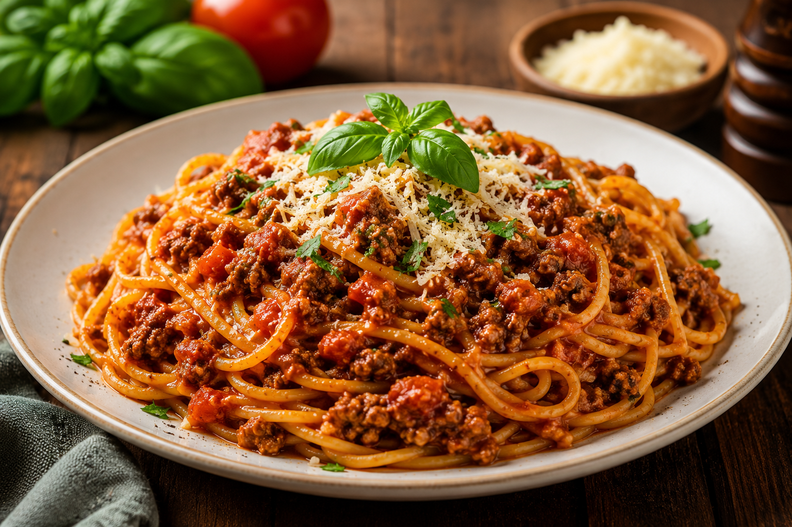

Back to Home PageSpaghetti Bolognese is a classic Italian-inspired pasta dish featuring spaghetti topped with a rich, savory meat sauce made with ground beef, tomatoes, onions, and herbs. It is hearty, delicious, and perfect for family meals.